Card 1 — Motivation
Different VFMs, such as DINOv2 and SigLIP2, are trained with different data and objectives. They share some common visual abilities, but each also has unique strengths and weaknesses.
CVPR 2026
Can heterogeneous Vision Foundation Models (VFMs) be stitched, fused, and served more efficiently?
 2Boston University
2Boston University
 3Amazon
3Amazon
* Work done during internship at Amazon.
TL;DR We revisit model stitching for Vision Foundation Models (VFMs) and show that different VFMs are not only compatible, but complementary. Our stitching recipe fuses their strengths and enables efficient multi-VFM systems through VFM Stitch Tree.
Different VFMs, such as DINOv2 and SigLIP2, are trained with different data and objectives. They share some common visual abilities, but each also has unique strengths and weaknesses.
Model Stitching connects the shallow layers of one VFM to the deep layers of another with a small stitch layer. If the stitched model still works well, the two VFMs have compatible internal representations.
We find that naive stitching is not enough. Our two-stage recipe first matches the target model’s final features, then fine-tunes the stitch layer with task loss.
Stitching heterogeneous VFMs is not only possible—it can fuse complementary strengths. With VFM Stitch Tree, multi-VFM systems can recover much of the gain of multiple full VFMs with far lower overhead.
VFMs are trained with different datasets, objectives, and modalities. They perform differently on downstream tasks, raising a key question: are they fundamentally different end-to-end, or are their internal representations still similar in some layers?
Can heterogeneous VFMs be stitched with minimal performance loss?
Can stitching do more than compatibility and fuse strengths?
Can this become a practical systems tool for multi-VFM efficiency?
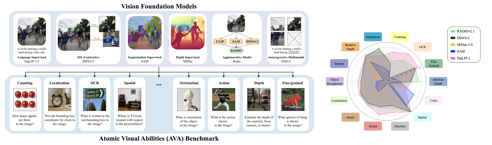
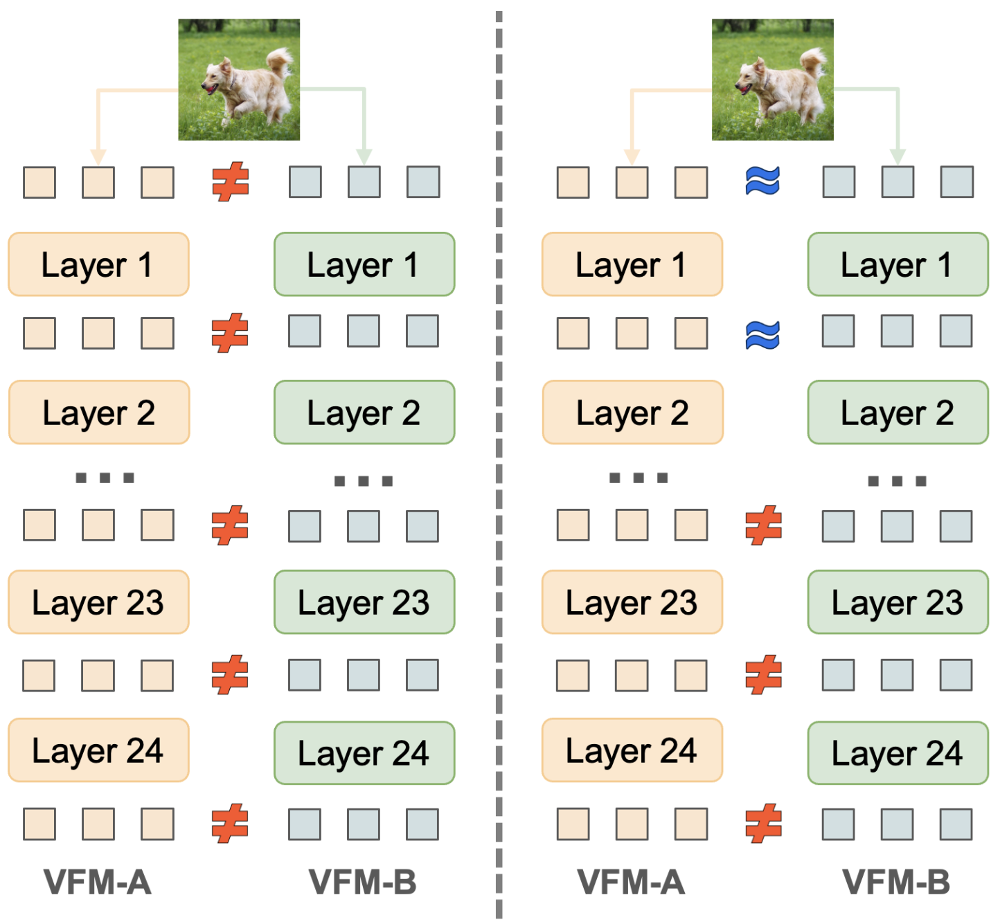
Model Stitching: connect the shallow layers of one model to the deep layers of another via a stitch layer (e.g., linear or MLP) to form a stitched model. If the stitched model has minimal performance drop, it means their internal representations are similar.
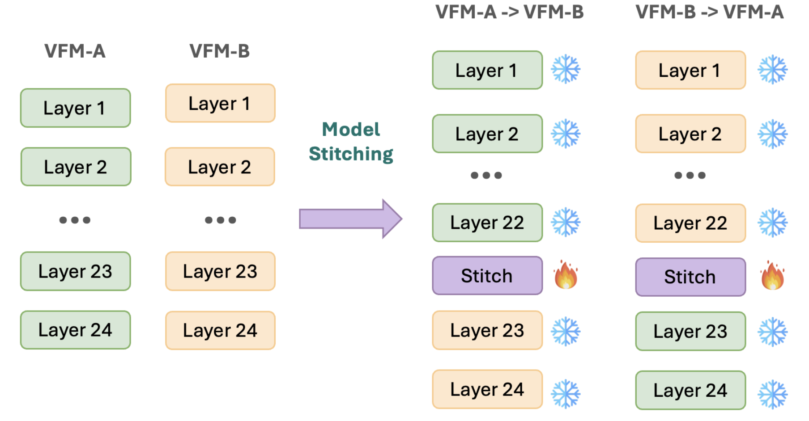
Layer Feature Matching trains the stitch layer to match the source and target features at the stitch position.
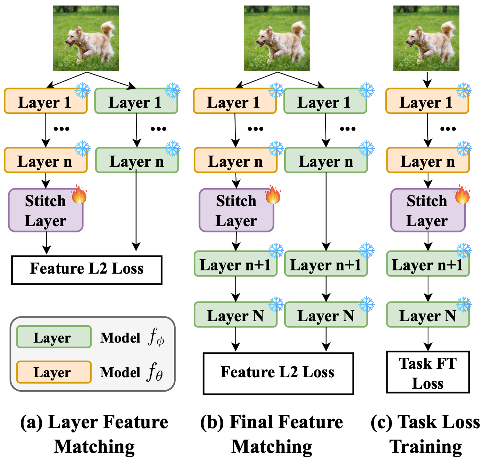
Why it fails. A small mismatch at the stitch position can be amplified by the frozen target layers, creating a large final-feature difference.
The remedy is Final Feature Matching: train the stitch layer so the stitched model matches the target model's final representation directly.
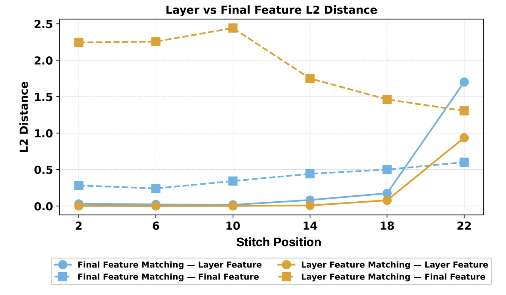
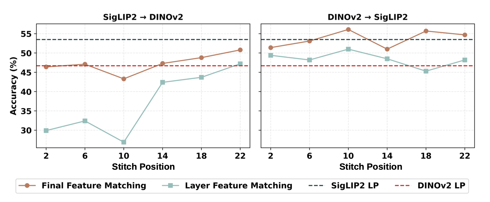
Task-Loss Training optimizes the stitch layer directly with the downstream objective, such as classification loss.
Problem. It sounds natural, but shallow stitching makes optimization difficult: as all post-stitch target layers are frozen, gradients must backprop through a long, fixed transformation to update only the stitch layer, especially challenging for randomly initialized stitch layer.
On DINOv2 -> SigLIP2 stitched at layer 2, Task-Loss Training drops to 25.1%, far below both original models and both feature-matching strategies.
| DINOv2 | SigLIP2 | Layer Feature Matching | Final Feature Matching | Task Loss Training |
|---|---|---|---|---|
| 46.7% | 53.4% | 49.4% | 51.4% | 25.1% |
DINOv2→SigLIP2 stitched at layer 2.
The key is to separate representation alignment from task adaptation. We first make the stitched model imitate the target VFM's final representation, then use task loss only after the stitch layer has a strong initialization.
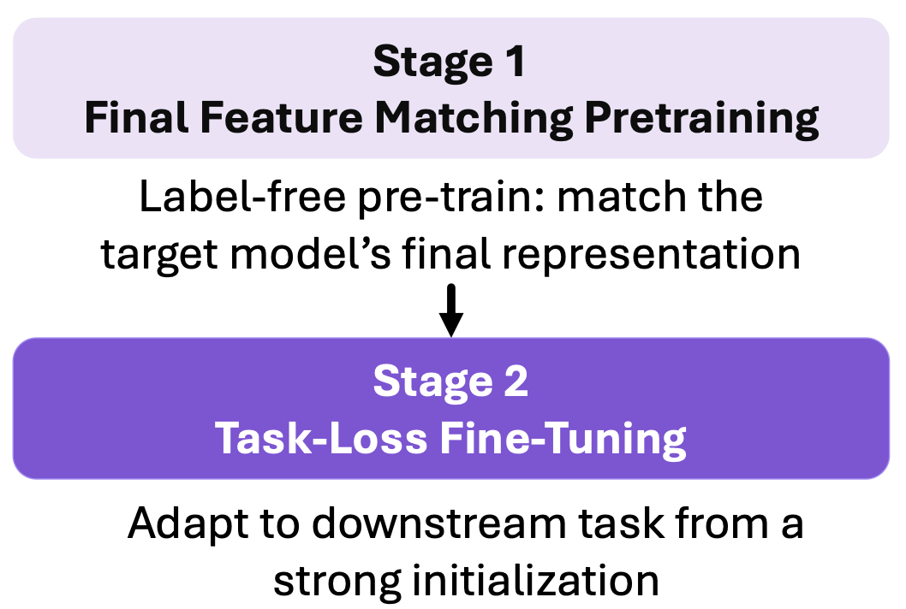
Final Feature Matching is label-free: it trains only the stitch layer so the stitched model mimics the target model's final features.
Task-Loss Fine-Tuning then specializes the aligned stitched model to the downstream objective, avoiding the optimization challenges of direct task-loss training.
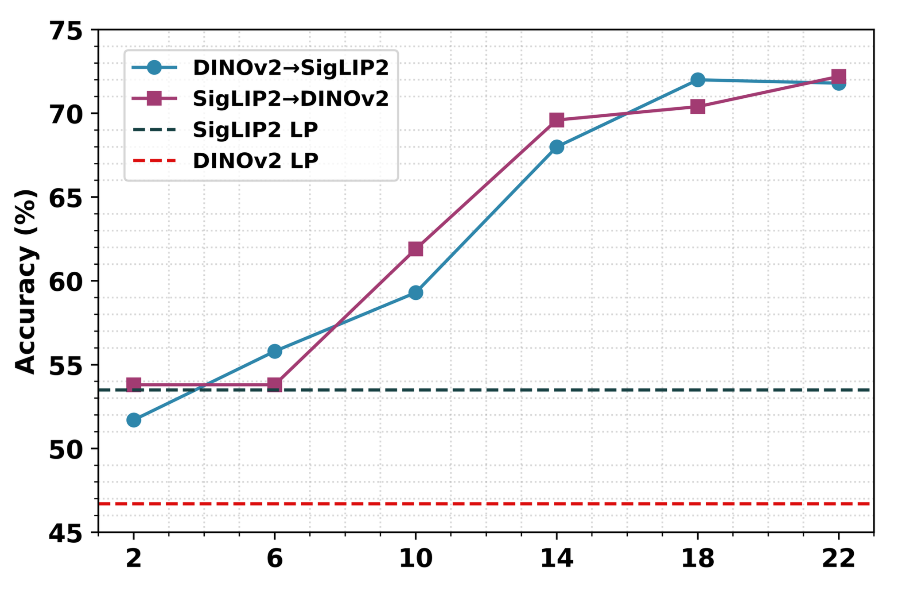
A stitched model has an extra trainable layer, so we need a control: does the improvement come from added capacity, or from combining two different VFMs?
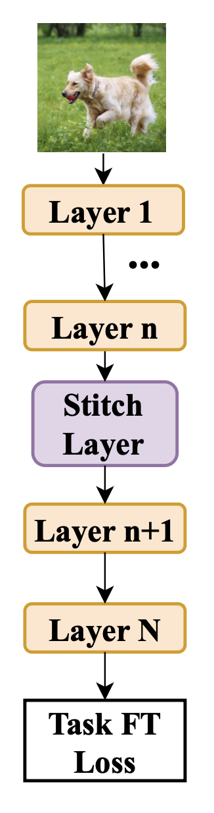
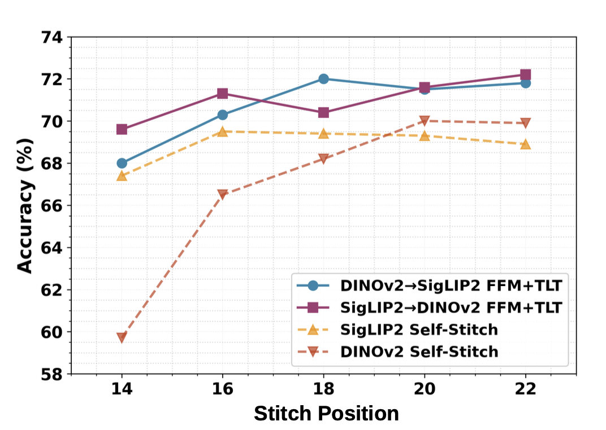
| Classification | Segmentation | |||
|---|---|---|---|---|
| fMoW | iNaturalist | Aircraft | ADE20K | |
| Stitch Position | 6 / 14 / 22 | 6 / 14 / 22 | 6 / 14 / 22 | 14 / 22 |
| DINOv2→DINOv2 | 41.5 / 59.7 / 69.9 | 56.9 / 81.5 / 91.2 | 37.8 / 79.3 / 91.2 | 35.4 / 50.9 |
| SigLIP2→SigLIP2 | 50.5 / 62.0 / 68.9 | 71.2 / 88.5 / 87.3 | 67.9 / 88.1 / 89.3 | 44.5 / 50.5 |
| DINOv2→SigLIP2 | 59.8 / 68.0 / 71.8 | 75.9 / 89.1 / 92.8 | 77.8 / 87.6 / 92.4 | 44.9 / 51.2 |
| SigLIP2→DINOv2 | 53.8 / 69.6 / 72.2 | 86.3 / 88.9 / 91.9 | 80.7 / 89.0 / 91.0 | 49.0 / 51.4 |
Stitching heterogeneous VFMs is not only feasible; it can fuse complementarity between models.
The same stitching recipe generalizes across model pairs, stitch positions, datasets, and both classification and segmentation tasks.
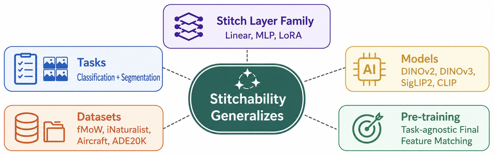
Multi-VFM systems improve performance by combining complementary visual representations, but they also introduce k× memory and latency when running k VFMs independently.
Reuse common early visual processing instead of running every VFM from scratch.
Keep model-specific deep branches, connected by lightweight stitch layers.
Choose the stitch position to trade off accuracy recovery against memory and latency.
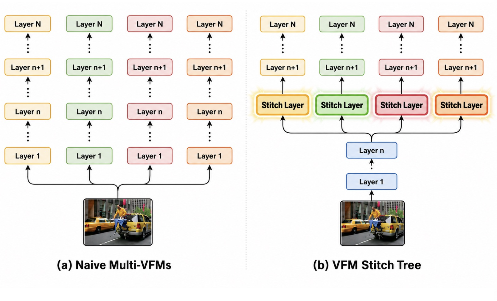
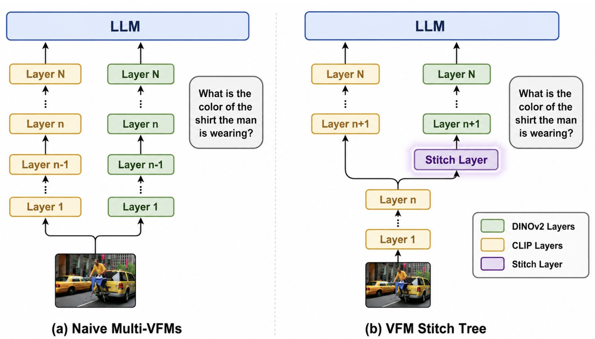
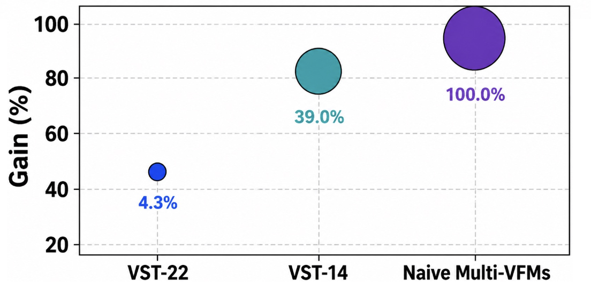
VFM Stitch Tree (VST) shares common shallow layers and keeps model-specific deep branches connected by lightweight stitch layers, enabling a practical accuracy-efficiency knob.
In MoF-LLaVA, VST recovers most of the two-VFM gain with much lower overhead: VST-22 uses only 4.3% extra resources, while VST-14 reaches 39.0% overhead and recovers substantially more gain than the low-overhead setting.
Stitch layer training matters.
Stitching fuses strengths.
Stitching enables efficient systems.
Model Stitching, from an analytical tool to a practical framework for combining the complementary strengths of VFMs.